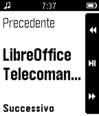
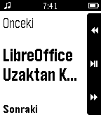
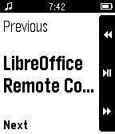
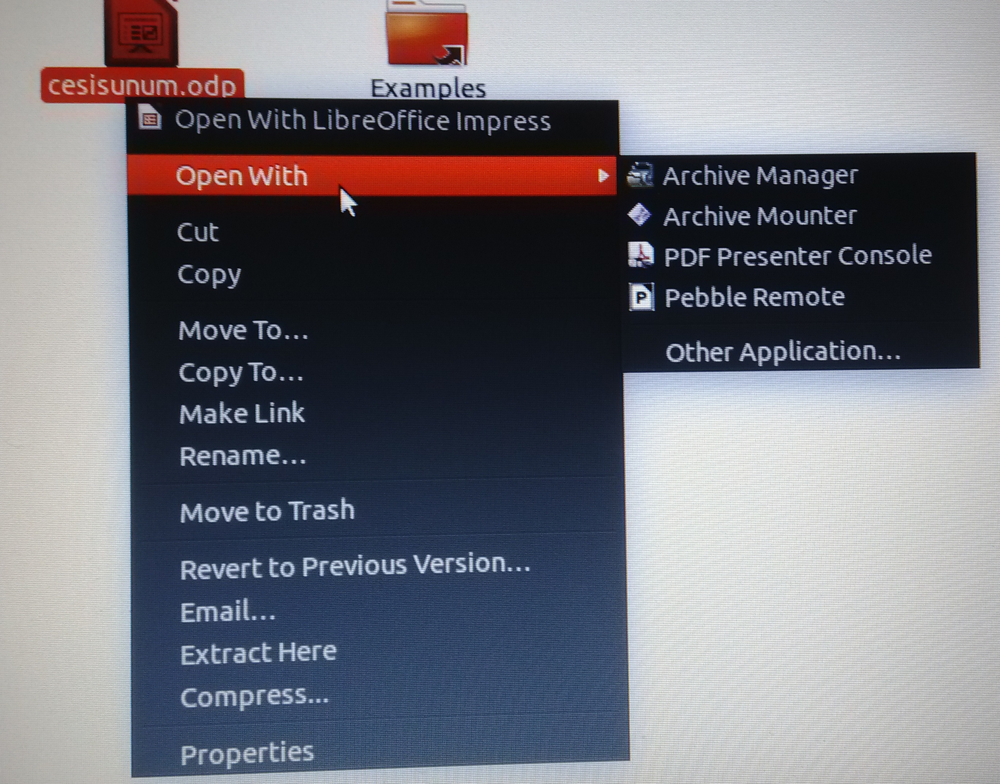

  
LibreOffice & Apache OpenOffice Remote Control with Pebble
Pebble Remote is a free software that provides remote control for Libreoffice & Apache OpenOffice Impress with Pebble. It is simple to installation and usage. This application can be used in two ways; via console or desktop. The directives are all for Ubuntu 14.04, but should be easily adaptable to other platforms. Windows and OS X versions are not available for the moment, please feel free to join the Project and contribute to develop Windows and OS X versions.
Installation
-
Install dependencies.
sudo apt-get install python-dev libopenobex1-dev python-tk python-lightblue python-pexpect xdotool python-bluez
-
To install lightblue clone
lightblue-0.4fromhttps://github.com/pebble/lightblue-0.4and then:cd lightblue-0.4sudo python setup.py install
-
Finally run this command
sudo pip install pebble-remote
Usage
-
Disconnect between the pebble by phone.
-
Pair pebble and with your computer on bluetooth.
-
To use the console tool:
pebble-remote path/to/file_name.odp
To use from desktop :
- Right click to presentation file
- Open with Pebble Remote
-
Open music app on your pebble. You can remote presentation by using up and down buttons on Pebble. Use middle button of Pebble for exiting presentation
Pebble Remote supports following languages:
- English
- Turkish
- Italian
- Spanish
- Catalan
- Slovenian
- German
Pictures

